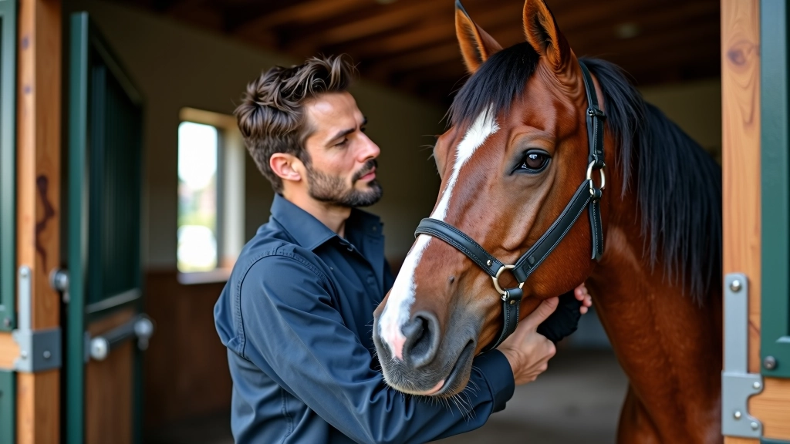

قصتنا
رحلة عطايا الخيل
بدأنا رحلتنا في عام 2023 بفكرة بسيطة: أن يكون هناك مكان موثوق يلجأ إليه مربو الخيول للحصول على معلومات واضحة ودقيقة. لاحظنا أن الكثير من المربين يعانون من الالتباس حول التغذية الصحيحة وإدارة الاسطبل، وأن المعلومات المتاحة كانت مشتتة أو غير موثوقة. فقررنا أن نغير الوضع.
